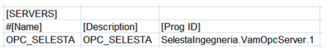
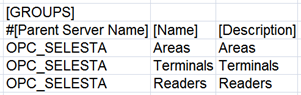
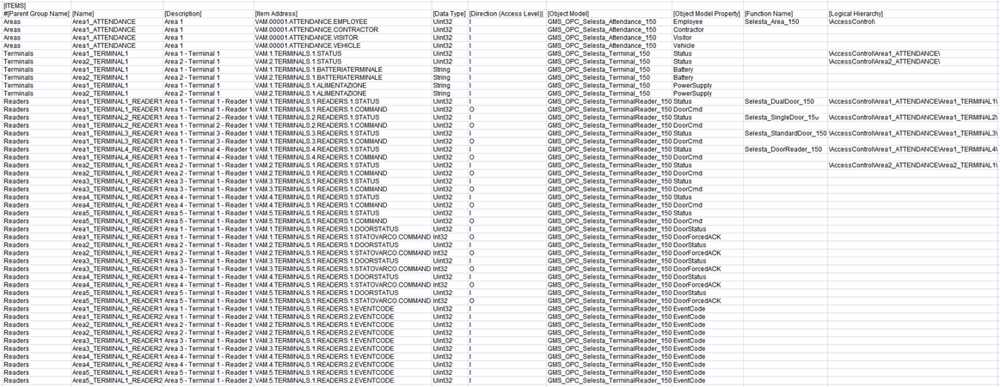

Selesta VAM Configuration (CSV) File
To integrate the Selesta VAM access control into Desigo CC you must first prepare a textual configuration file in CSV (comma separated values) format that defines the servers-groups-items structure.
To do this, use Microsoft Excel or a text editor to edit the configuration file.
NOTE: Use a comma (,) as separator.
You can then use this file to import the configuration.
For reference information about the OPC configuration CSV file, see CSV File for Third-party OPC Devices.
To obtain pre-configured CSV sample files to edit, contact the Technical Support team.
Pre-configured sample files can be used to create custom configuration files by adding or removing areas, terminals, and readers according to the specific configuration.
Additionally, since the device points are imported into Management View as a flat list, pre-configured sample files also provide a predefined logical view hierarchical sample structure for the first two areas.
As for the logical view, pre-configured sample files can be also modified to automatically create a user-defined view out of the import. This part is not provided in pre-configured CSV files because user views strictly depend on the customer’s requirements that can be easily added.
Selesta VAM OPC CSV File Sections
Section | Description |
[SERVERS] | Includes Selesta VAM OPC server data. One server per CSV file is allowed. |
[GROUPS] | Groups the Selesta VAM OPC tags in components. |
[ITEMS] | Includes tag data (Selesta VAM OPC point read by the OPC server). |
Selesta VAM Servers Data
The [SERVERS] section comprises the following data:
Data | Description |
[Name] | OPC server name to display in System Browser. |
[Description] | OPC server description to display in System Browser. |
[ProgId] | Program ID of the OPC server. |
[Alias] | Not used. |
[FunctionName] | Not used. |
[Discipline ID] | Not used. |
[Subdiscipline ID] | Not used. |
[Type ID] | Not used. |
[Subtype ID] | Not used. |

Selesta VAM Groups Data
The [GROUPS] section comprises the following data:
Data | Description |
[ParentServerName] | Name of the OPC server to which the point is connected. |
[Name] | OPC group name to display in System Browser. |
[Description] | OPC group description to display In System Browser. |

Selesta VAM Items Data
The [ITEMS] section comprises the following data:
Data | Description |
[Parent Group Name] | Name of the group to which the point belongs. |
[Name] | OPC item name to display In System Browser. |
[Description] | OPC item description to display In System Browser. |
[Item Address] | Name of the tag that is exposed by the OPC server. |
[Data Type] | Transformation type. Data format required by the OPC Server. |
[Direction (Access Level)] | Value that defines if the OPC item is input, output or input/output. |
[Object Model] | Name of the object model used for this OPC tag.
|
[Object Model Property] | Name of the DPE associated to this OPC tag. |
[Alias] | Not used. |
[Function Name] | “Function” name. Used to associate the Function (for example, “Selesta_DualDoor_150”) to the Point Instance automatically during the import of the CSV file. |
[Discipline ID] | Not used. |
[Subdiscipline ID] | Not used. |
[Type ID] | Not used. |
[Subtype ID] | Not used. |
[Min] | Not used. |
[Max] | Not used. |
[MinRaw] | Not used. |
[MaxRaw] | Not used. |
[MinEng] | Not used. |
[MaxEng] | Not used. |
[Resolution] | Not used. |
[Eng Unit] | Not used. |
[StateText] | Not used. |
[AlarmClass] | Not used. |
[AlarmType] | Not used. |
[AlarmValue] | Not used. |
[EventText] | Not used. |
[NormalText] | Not used. |
[UpperHysteresis] | Not used. |
[LowerHysteresis] | Not used. |
[LogicalHierarchy] | Used to create a hierarchy in the logical view. |
[UserHierarchy] | Used to create a hierarchy in the user-defined view. |


The specific OPC tags are defined by the OPC server. For more details about the OPC tags provided by the Selesta VAM server interface, see the VAMweb Interface – OPC – v.2.02 document distributed by Selesta.